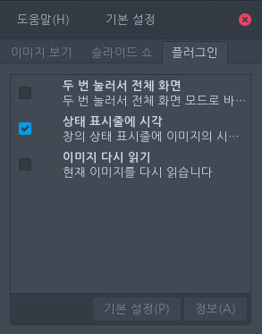

3. 플러그인 탭

여기에서 추가 기능을 원하는대로 활성화하거나 비활성화할 수 있습니다. 왼쪽 이미지에서는 기본적으로 사용 가능한 플러그인을 표시합니다.
경우에 따라 eog-plugins 패키지를 설치해야 할 수 있습니다. 이 패키지에는 추가 기능을 제공하는 플러그인이 포함되어 있습니다. 패키지를 설치한 다음 오른쪽 이미지와 같이 해당 플러그인을 활성화해야 할 수 있습니다.
경우에 따라 eog-plugins 패키지를 설치해야 할 수 있습니다. 이 패키지에는 추가 기능을 제공하는 플러그인이 포함되어 있습니다. 패키지를 설치한 다음 오른쪽 이미지와 같이 해당 플러그인을 활성화해야 할 수 있습니다.